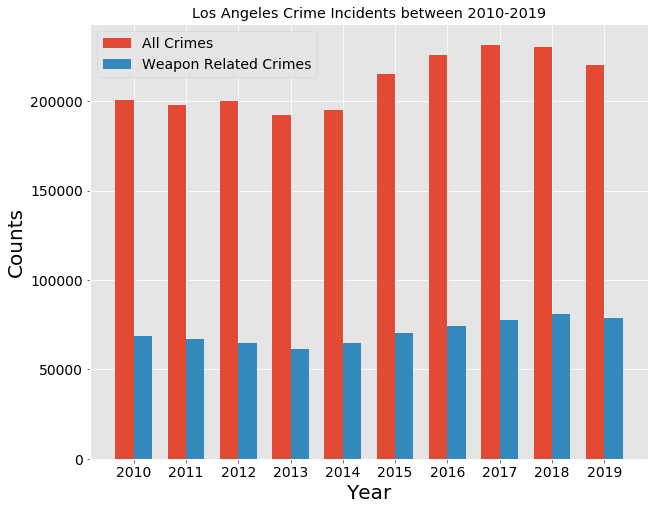
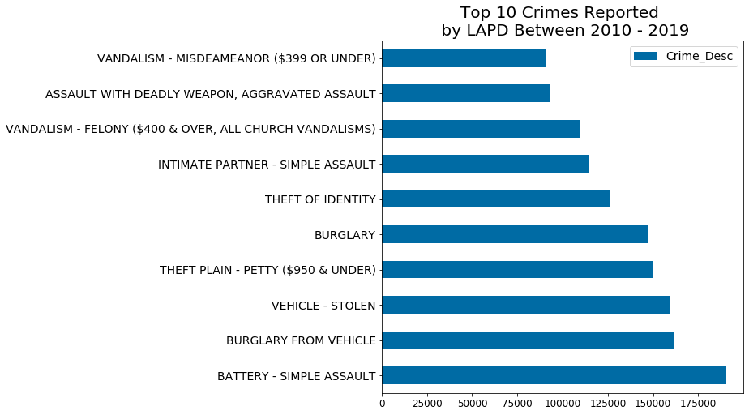
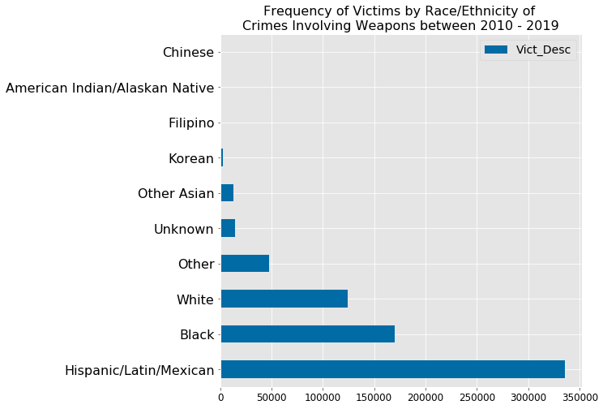
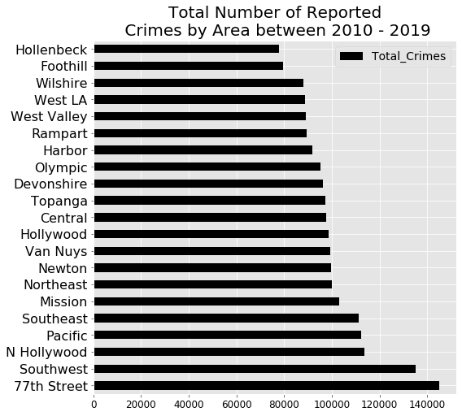
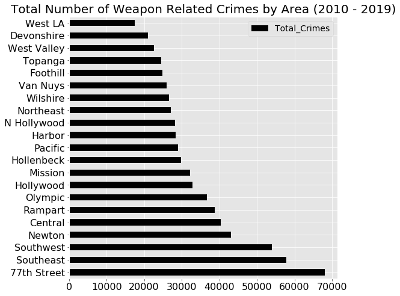
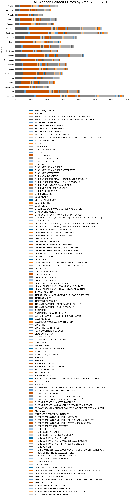

Weapon Reported Crimes in LA between 2010 - 2019.
First Posted: 12-23-2019
Last Updated: 4-11-2020
Background Info

LA Crime Data:
Los angeles county is an area with over 10 million inhabitants (1), and is the third largest city by
GDP in the world (2). As the population continues to grow, efforts to track, and understand criminal
activities are critical at ensuring the city remain safe for its inhabitants, attractive to business and
tourism. In the wake of mass shootings, crimes
involving weapons has become an important
political issues. Fire arm's in particular, have been at the center of this discourse, and although this
may be true for mass shootings, an analysis on whether other weapons should be targeted by policy
makers is needed.
The aim of this study is to analyze over 2
million crime incidents reported in LA between 2010 - 2019 (3), and characterize the victims reported in
these crimes, the weapons that are
commonly reported, and the crimes that are involved.
Why is this important?
Understanding these trends can help inform policies that aim at reducing their incidents.
Resources & Citations
- 1. "QuickFacts Los Angeles County, California; California". Retrieved Dec 23, 2019.
- 2. Metropolitan areas by GDP. Retrieved Dec 23, 2019.
- 3. Data.lacity.org. Originally Retrieved Dec 2, 2019, and then on April 10th, 2020.
- 4. Leaflet. Retrieved Dec 2, 2019.
- 5. GREMLING, N. U. M. A. (2019). LEAFLET COOKBOOK: Recipes for creating dynamic web maps. S.l.: LOCATE PRESS.
- 6. Los Angeles Police Department Area Stations Tomas Bros. Maps. "LAPD Area Stations." LAPD/ADSD/GIS MAPPING, Retrieved from http://www.lapdcadets.com/divisions/, Date of Access (12-24-2019, 4-8-2020).
- 7. Census Reporter Median Household Income by Zip Codes.
Research Objectives
- Describe general trends in the entire dataset (2010 - 2019).
- Describe the top 10 crimes involving weapons.
- Describe the top 10 weapons involved in these crimes.
- Describe the proportion of weapons used in the top 10 crimes.
- Determine how these weapons have been reported over time.
- Determine the age distribution of victims.
- Determine if women are victimized at higher levels than men in weapon related crimes.
- Describe the ethnic makeup of victims.
- Provide an interactive map that allows users to explore the geographical location of weapon related crimes reported in 2019.
- Determine which areas had the highest crime rates
- Describe the types of crimes committed by area.
- Executive summary.
Methods
Crime data subset strategy.
The data was accessed from Data.la.city.org (3) Crime Data from
2010 to Present. This dataset contains incidents of crimes reported in the City of Los Angeles
between 2010 - 2019. The dataset is refreshed weekly, and is transcribed from crime reports typed on
paper. The dataset contains over 2 million records, and 28
features. Only thirteen features were used in this study: date reported, victim age, victim sex, victim
descent, major crime code committed, crime description, major weapon used code, weapon description,
status code, and status of case, LAPD area crime was committed, and the crime lat and long.
Column=['Date Rptd', 'Vict Age', 'Vict Sex', 'Vict
Descent', 'Crm Cd 1', 'Crm Cd Desc', 'Weapon Used Cd', 'Weapon Desc', 'Status', 'Status Desc', 'AREA
NAME' , 'LAT',
'LON'. The analysis excluded records that had missing values for these features: 'Weapon_Desc',
'Vict_Sex', 'Vict_Desc', 'Crime_Code', 'Status']. An incident may be associated with more than a single
crime code, but only the major (or first), crime code listed was used in this study.
Exclusion and Inclusion Criteria for 2019 Data
Any incident that was reported on, or after 1/1/20 was excluded from this analysis.
Median Household Incomes
Median household incomes and population demographics was obtained from the Census Reporter website, which gathers information from the ACS 2018 data. A zipcode within the LAPD Area was used as a proxy for the entire region. 77TH street (90001), and WestLA (90025),
Exclusion and Inclusion Criteria for Victim Sex
The dataset contained several categories for sex ('M', 'F', 'H', 'N', 'X', '-'), no documentation was available to clarify the definitions for 'H', 'N', and '_' categories. Only 'M' and 'F' categories were included in this study, although it would be interesting to determine how transgender identified individuals are victimized by crimes in LA. A separate study would need to be conducted, for this post, only "M" and "F" categories will be included.
Interactive map using leaflet
To allow users to explore the geographical distribution of weapon related crimes in LA, the javascript Leaflet library was used as described (4, 5). Only data from the 2019 calendar year was used in this interactive plot. Data was restricted to crimes involving weapons. Up to forty geographical markers are displayed at a given time, and not all weapon categories will have markers, as they may not have been reported at the time of this study.
Analysis
The programming language Python was used in this project. Data was loaded and manipulated using the pandas library. The matplotlib and seaborn libraries were used to visualize data. The scipy and statsmodels.api libraries were used in the statistical analysis. Normality was evaluated using a qqplot, while the Barlette's test was used to test for equal variance. A Welch's t-test for two independent samples was used to determine statistical differences between groups that did not have equal variance.
Results: All Crimes
Since 2015, more than 200,000 crimes are reported by LAPD.
To understand the overall crime rates in LA, the total number of crimes per year were plotted, and for
comparison, the total number of crimes that involved weapons was included. The total counts appear
to drop
between 2010 to
2013, and then increase annual from 2013 to 2017. Between 2017 and 2019, the total crimes reported have
decrease,
whereas the number of crimes involving weapons have increased for most of these years (Figure 1).
Moreover, nearly a quarter of all crimes involve a weapon.

{kind=link}
Figure 1. Total weapon related crimes reported in LA between 2010 - 2019.
Seven of the top 10 crime categories reported between 2010-2019 involve theft and vandalism, while the remaining three are assault (Figure 2a).
When looking at all the crimes that were reported between 2010 - 2019, theft was the most prevalent category in the top 10 list (5/10: burglary from vehicle, stolen vehicle, theft, burglary, and identity theft). In this top 10 list, three of them involved some form of violence: Battery (rank 1), Intimate Partner assault (rank 7), and Assault with a deadly weapon (rank 9).

{kind=link}
Figure 2a. Frequency of top 10 Crimes Reported by LAPD Between 2010 - 2019.
Results: Weapon Related Crimes
Fire arms represent four of the top 10 weapon descriptions reported by LAPD between
2010-2019 (Figure2b).
There were eighty unique weapons reported in crimes during 2010-2019. The use of ones body "Strong-Arm"
to attack or threaten to attack, was the top
weapon reported. Although, the use of fire arms was listed 4 times (Hand gun (rank 3), Semi-automatic
pistol (rank5), unknown firearm (7), revolver (10)), to total sum of
these incidents (60,448) is a 14th of those reported with strong-arm (429,671). It is possible this
lower levels of gun violence may be attributed to gun control measures (access or cost).
{kind=link}
Figure 2b. Frequency of the Top 10 Weapon Descriptions Reported by LAPD Between 2010 - 2019.
Assault is the most common crime involving weapons (Figure 3).
In the dataset, there were over 140 unique crime descriptions listed. The top 10 weapon related crimes
had more
than 9000 incidents reported each, and some of these crimes fall in categories that are redundant. For
example, domestic violence appears twice (#2 and # 6), robbery\burglary four times (#4, #7, #8, #10),
and assault\battery\threats four times
(#1, #3, #6, #9). The fact that these categories appear multiple times are indicative of their
prevalence
in society. Battery and the threat of physical harm (Assault) are the most represented in this dataset,
and would be a potential target for policies geared towards addressing anger and violence, and the
systemic causes of these events.
{kind=link}
Figure 3. Frequency of the Top 10 Crimes Involving Weapons Reported by LAPD Between 2010 - 2019.
Strong-arm is represented in most of the crime categories.
Strong-arm was the overwhelming majority in assault, battery, and robbery cases (Figure 5). Firearms
were the next category with a good proportion within the to 10
crimes involving weapons. Verbal
threats was the predominant category in crimes involving criminal threats, and the use of vehicles was
recoded in cases involving assault with a deadly weapon. Unknown weapons was reported in crimes
involving assault with a deadly weapon and robbery.
{kind=link}
Figure 4. Proportion of Weapons Reported in the Top 10 Crimes in LA Between 2010 - 2019.
The use of strong-arm in crimes appears to have increased since 2013.
When comparing the incidents of specific weapons in reported crimes, all but strong-arm seem to be
stable (Figure 5). The total number of crimes involving strong-arm increase from 2013 - 2018, and this
may account for the total increase in weapon related crimes, despite the reduction in total overall
crimes
between 2017-2018 (Figure 1).
{kind=link}
Figure 5. Proportion of Weapons Reported in the Top 10 Crimes in LA Between 2010 - 2019.
Strong-Arm, Verbal Threats, Knifes, Hand guns, and Vehicles seems to increase since 2013
(Figure 6).
Strong-arm is not the only weapon that increased in numbers during this reported period. Criminal
threats, the use of knives, hand guns, and vehicles also seem to increase.
{kind=link}
Figure 6. Click image to enlarge. Trends in weapon usage between 2010 - 2019 for the top 10 weapons.
Victims in this dataset are in their 30s.
The mean age of victims for all crimes was 31.7 years old ± 20.7 yrs, where the age of male victims was
35 ± 19.5 yrs and female victims 37 ± 16.6 yrs. When evaluating the age distribution for all crimes,
there doesn't seem to be a significant different these two populations (Figure 7, 8).
When we examine the age distributions for victim of weapon related crimes (Figure 9, 10), it appears
that these victims are younger, and that women are specifically younger than male victims. In fact the
mean age of male victims was 34 ± 17.7 yrs and female victims 33 ± 15.2 yrs.
{kind=link}
Figure 7. Age of Victims by Sex (M/F) All Data (2010 - 2019)
{kind=link}
Figure 8. Age distribution for Male and Female victims reported by LAPD between 2010 - 2019.
{kind=link}
Figure 9. Age of Victims of Weapon Related Crrimes by Sex (M/F) All Data (2010 - 2019).
{kind=link}
Figure 9. Age distribution for Male and Female victims of weapon related crimes reported by LAPD between 2010 - 2019.
There is significant difference in the mean age of victims of weapon related crimes by
sex.
To determine if there was indeed a statistically different mean age of victims by sex, a Welch’s
t-test for independent samples was conducted. A qqplot was used to evaluate normality in the dataset
(Figure 11), and a Barlette's test was conducted to evaluate the variance in the two groups. These
tests confirm the need to use the Welch's test, which indicated to reject the null hypothesis that
there were no difference in the mean age of victims in weapon related crimes by sex (p = 3.76e-125).
There is a significant difference in the age of female and male victims in weapon related crimes, which
suggest younger women are at greater risk of victimization.
{kind=link}
Figure 11. QQPlots for Age of Victims of Weapon Related Crimes Reported by LAPD between 2010 - 2019.
Most of the victims are either Hispanic, Black, or White.
The top 3 racial groups in LA are also the top 3 victims of weapon related crimes (Figure 12, 13).
Hispanic victims account for a good portion of the data, despite the fact that white alone account for
52.4% of the city population (1). Poverty rates might be responsible for the higher rate of
victimization in the hispanic population.
{kind=link}
Figure 12. Frequency of Victims by Race/Ethnicity of Crimes between 2010 - 2019.
{kind=link}
Figure 13. Frequency of Victims by Race/Ethnicity of Crimes Involving Weapoons between 2010 - 2019
Interactive map to explore 2019 crimes by weapon category.
The next objective of this study is to examine the geographical distribution of crimes involving
weapons. To this end, all crime reported in 2019 was analyzed. Up to forty randomly
selected incidents (markers) are displayed at any given time, and not all weapon categories will have
markers, as they may not have been reported at the time this study was published.
The Southwest and 77th street areas have the highest total crimes, and highest weapon
related crimes reported between 2010 - 2019.
In this part of the study, we decided to investigate the entire dataset, including those reported in
2019.
There are 21 areas listed in this dataset, and these areas correspond to LAPD station areas (Figure 14).
The areas with the highest
number of total crimes, and weapon related crimes was 77th street, Southeast, and Southwest (Figure
15, Figure 16). Although the data for these areas trend together, the data also indicate that an area
can rank higher in weapon related crimes, but rank lower in total overall crimes. An example of this
would be Hollenbeck, which ranks 10ths in weapon related crimes, but ranks last in total overall crimes.
Taken
together, this data suggest that weapon related incidents do not associate with total overall crimes in
all areas.

Figure 14. Map of LAPD Stations and Areas.
{kind=link}
Figure 15. Total Number of Reported Crimes by Area between 2010 - 2019.
{kind=link}
Figure 16. Total Number of Weapon Related Crimes by Area between 2010 - 2019.
Strong arm is the most frequently reported weapon related crime in all
areas.
To determine the distribution of the top 10 weapons reorted by area, a proportional bar plot
was prepared. The proportion of weapons reported by area seem consistent, with strong arm representing
the largest proportion, followed by verbal threats and fire arms (Figure 17).
When we examine all crimes in Figure 18, we do see that areas have a unique reporting fingerprint. For
example, WestLA, which has a median household
income of $78,713 (7) had similar number of assault on firefighter or peace officer with deadly weapons,
than those reported in the 77th street area, which as a median household income of $35,660 (7). This is
interesting because one would assume crimes against civil servants would be higher in areas with lower
income. A study would need to be conducted to determine if median household income trends with specific
crimes by area.
{kind=link}
Figure 17. Proportion of Weapons Reported by Area between 2010 - 2019.
{kind=link}
Figure 18. Proportion of all weapon related crimes by area (2010 - 2019).
Concluding remarks.
The aim of this study was to analyze over 2 million crime incidents reported in LA between 2010 - 2019
(3), and characterize the victims reported in these crimes, the weapons that are commonly reported, and
the crimes that are involved.
From this cursory analysis we see that:
- More than 200,000 crimes are reported annually in LA by LAPD.
- Strong arm, and firearms are most frequently the weapons reported in crimes.
- Assault and theft are the most frequently reported crimes.
- Weapon related crimes are nearly a quarter of reported crimes.
- Victims of all crimes are in generally in their 30s.
- Victims of weapon related crimes are generally younger.
- Female victims of weapon related crimes are younger than male victims.
- Hispanic, whites, and blacks are the largest group of victims, with hispanic being the largest group of victims.
- The 77th LAPD area has the highest number of crimes, and highest number of weapon related crimes.
- Each LAPD area has a unique reported crime signature, that may be influenced by the socioeconomic demographic of the community it serves.